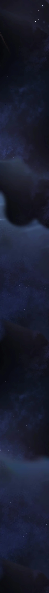

Kafka Cemetery
Cyrus hid within the bushes as he watched Anthony lay the letter beside Emily, who was sleeping beneath the old tree.
Without saying a word or doing anything else, Anthony turned around and walked away. He didn't even look back.
Cyrus remained where he was, waiting to see what would happen next. He wanted to be certain Anthony had truly left and wasn't hiding somewhere in the darkness, waiting for someone to reveal themselves and fall into a trap.
Seconds turned into minutes.
Minutes turned into hours.
Finally, Cyrus decided to reveal himself.
He quietly stepped into Kafka Cemetery.
He was now confident that nothing was going to happen—that no one would catch him.
Without hesitation, he hurried toward the tree, annoyed that he had wasted so much time waiting for what now seemed like no reason.
When he finally reached it, Emily was still fast asleep.
What surprised him most wasn't that she hadn't moved...
It was that she was naked.
He didn't remember seeing her remove her clothes, nor had he seen Anthony do anything of the sort. Throughout the entire time he had watched them, she had been fully dressed.
So why was she naked now?
The thought lingered in his mind, but it wasn't what interested him the most.
His eyes were fixed on the letter lying beside her.
He bent down, picked it up, and carefully opened it.
Whoever had written it possessed beautiful handwriting.
Every stroke was elegant, precise, and effortless.
For a brief moment, Cyrus admired it. Compared to his own handwriting—which he often considered the worst imaginable—it looked almost unreal.
It resembled an ancient script, the kind only a gifted few could truly read.
As he unfolded the letter, countless thoughts raced through his mind.
Could Anthony and Emily be involved in a relationship I don't know about?
Could they be in love?
Taking a slow breath, Cyrus lowered his eyes to the page...
...and began to read.
----------
Dear Emily,
My one and only chosen lover,
You mean more to me than words could ever express. My love for you keeps me awake through every night and fills every moment of every day. For your sake, I bend the very strings of the universe, keeping you safe and clearing every path that leads you back to me.
I want us to be together.
I do not want your faith in me to fade, nor your love to wither. That is why I ask these things of you. Unbreakable love exists only when two souls are willing to do anything for one another.
Only a few days remain before we are finally united, and I refuse to let anything stand between us.
So I ask one thing of you.
Go to Kingsmere.
When you arrive, you will know where to go.
There, you will meet someone.
That person will guide you...
...and you will follow.
Until we meet again,
Your Beloved,
E + H
-------
Cyrus carefully folded the letter and placed it back exactly where he had found it.
He reached into his pocket and pulled out his phone.
Without making a sound, he took several pictures of Emily as she slept beneath the tree.
As he lowered his phone, something caught his eye.
His gaze drifted toward the trunk of the old tree.
There, carved deep into the bark, were two letters.
E + H
The cuts looked old, as though they had been there for years.
Cyrus frowned.
He quickly raised his phone once more and took several photographs of the carving before slipping the device back into his pocket.
He gave the sleeping Emily one last glance.
Questions continued to race through his mind, but he knew lingering there any longer was a bad idea.
Turning away from the tree, Cyrus quietly disappeared into the darkness, leaving Kafka Cemetery exactly as he had found it.
Kingsmere Matt's Residence 3rd Avenue
Morning light spilled through the tall windows, washing the bedroom in a pale golden glow. The curtains swayed gently as a cool breeze drifted through the slightly open window, carrying with it the distant sounds of birds and the quiet life of the Mathens estate awakening.
Billie remained asleep.
She lay peacefully beneath the covers, her chest rising and falling in slow, even breaths. Since the previous night, she had barely moved. The strange green chemical she had been exposed to had left her unconscious for hours, and despite Beatrice's earlier assurances, Matt found himself watching her more than anything else.
He sat silently on the edge of the bed, still dressed, his elbows resting on his knees. His eyes rarely left Billie's face, as though expecting her to wake at any moment.
A knock echoed from the bedroom door.
"Come in," Matt said without looking away.
The door opened quietly, and Beatrice Whitmore stepped inside carrying her usual composed elegance. Dressed in her immaculate black butler's uniform, she closed the door behind her before approaching the bed.
"Good morning, sir," she said softly. "Is she alright?"
Matt finally turned toward her.
"She hasn't moved at all."
Beatrice nodded before walking to Billie's side. She gently lifted Billie's wrist, placing two fingers against it as she checked her pulse. Her expression remained calm and professional.

"Her pulse is normal," she said after a few moments. "Strong... and stable."
She placed Billie's hand back beneath the blanket.
"I believe she's simply sleeping. The chemical she inhaled likely forced her body into an unusually deep state of rest. Given enough time, she should wake naturally."
Almost as if responding to Beatrice's words, Billie shifted slightly beneath the blanket. A faint movement of her shoulder was followed by a quiet breath before she settled once more.
Matt watched every movement.
For the first time that morning, some of the tension in his expression eased.
Beatrice reached into the pocket of her jacket and produced a neatly folded envelope.
"Anthony delivered a letter early this morning," she said, handing it to him.
Matt unfolded it and quickly scanned its contents.
"He says he'll be visiting Martin's hideout this morning. He's asking if you'd accompany him."
The room fell quiet again.
Matt lowered the letter and looked back at Billie. For a long moment he simply stared at her sleeping face. Then, almost absent-mindedly, he reached forward and brushed a loose strand of hair away from her forehead. His fingers lingered only for a moment before he withdrew his hand.
"I'll prepare," he said quietly. "Look after Billie while I'm gone."
"Of course, sir."
Matt stood, straightened his jacket, and walked toward the wardrobe to prepare for the journey.
Before he had taken more than a few steps, his phone began to ring on the bedside table.
The screen displayed a familiar name.
Natasha.
Matt glanced at the phone before picking it up and handing it to Beatrice.
"Answer it."
Beatrice inclined her head and accepted the call.
"Good morning."
"Morning, Daddy," Natasha greeted cheerfully before pausing. "…Wait. That's not Matt."
"This is Beatrice Whitmore."
"Oh." Natasha sighed. "The butler. Is Matt around?"
"I'm afraid not," Beatrice replied in her usual calm tone. "Sir Matthew is currently attending to important matters. It would be best if you spoke with him later."
There was a brief silence.
Natasha let out an exaggerated exhale.
"You know... it doesn't hurt to sound like a normal person every once in a while."
Beatrice remained perfectly expressionless.
"I shall take that into consideration."
"...Right."
The call ended.
Beatrice lowered the phone and placed it neatly back onto the bedside table as though nothing unusual had happened.
Across the room, Matt continued preparing in silence, while Billie remained peacefully asleep, unaware that everyone around her was already moving toward whatever awaited them at Martin's hideout. Matt left the room as Beatrice followed behind her.
"Bea... keep her safe," Matt said as he adjusted his coat near the front entrance. "Make sure she recovers. If anything happens, call me immediately."
"Of course, sir," Beatrice replied with a respectful nod. "Everything is under control. I have everything I need here."
She offered him a small, reassuring smile.
"I hope you find what you're seeking."
Matt gave a slight nod before stepping outside. Moments later, the deep growl of his car echoed through the estate as it disappeared beyond the front gates.
Beatrice returned upstairs and quietly closed the bedroom door behind her.
The hallway was already alive with the soft sounds of the household beginning another morning. Dust cloths swept across polished furniture, buckets rolled gently over the wooden floors, and maids moved carefully between rooms.
One of them noticed Beatrice approaching.
"Cecilia."
The young cleaner immediately stopped what she was doing and walked over.
"Yes, ma'am?"
"Sir Mathens' room is not to be entered under any circumstances."
"Understood."
"And keep the noise to a minimum. Lady Billie is resting."
"Yes, ma'am."
Cecilia bowed her head before quietly returning to her duties.
Satisfied, Beatrice continued down the corridor.
Silence settled over the bedroom once more.
Then—
Billie's eyes opened.
There was no groggy confusion.
No slow awakening.
She sat upright almost instantly, as though she had never been ill.
The blanket slipped from her shoulders as she turned toward the window. Through the glass she caught sight of Matt's Aston Martin disappearing down the long driveway.
A smile slowly spread across her face.
"Ah..."
Her eyes seemed to brighten.
"Andrew."
The name escaped her lips almost lovingly.
Without another thought, she climbed out of bed.
There was no sign of weakness. No dizziness. Whatever had overcome her the previous night had vanished completely.
She entered Matt's private bathroom and washed herself before taking her time getting dressed. She carefully fixed her hair, adjusted every crease in her clothes, and admired herself in the mirror.
She looked less like someone recovering from illness...
...and more like someone preparing for a date.
When she finally stepped away from the mirror, her beauty was breathtaking—elegant enough to rival even Belladonna Mathens herself.
Her gaze drifted toward the bed.
A mischievous smile crossed her lips.
She gathered spare blankets and pillows, arranging them beneath the sheets until they resembled the outline of a sleeping body. From a distance, anyone checking the room would believe she was still asleep beneath the covers.
She took one last glance at her handiwork.
"That should buy me some time."
Her attention shifted toward the curtains.
She pulled them aside and unlocked the window.
Cool morning air rushed into the room.
Billie leaned out.
The drop was considerable.
The bedroom sat on the second floor of the Matt estate, and there were no balconies, no vines, no ledges, and nothing she could climb down safely.
Most people would have closed the window.
Billie simply smiled.
"Andrew..."
Without hesitation...
...she jumped.
Her body struck the ground with a heavy thud.
Pain shot through both legs as she rolled across the grass before coming to a stop.
She pushed herself upright, wincing only slightly.
One knee had been scraped open, blood slowly running down her shin. Dirt clung to her palms and sleeves, and the impact had left her breathing harder than before.
She looked down at the injury for only a moment.
It didn't matter.
"Andrew," she whispered again.
As if pulled by an invisible thread, Billie limped away from the estate, ignoring the blood running down her leg, following the same road Matt had taken only minutes earlier.
Emily slowly opened her eyes.
Morning sunlight filtered through the branches above, dancing across the old tree beneath which she had fallen asleep.
She slowly sat up.
A folded letter rested beside her.
Her eyes lingered on it for a moment before another realization struck her.
She was naked.
Emily looked down at herself and smiled faintly.
"Nakedness is to be clean..." she whispered, repeating words she had heard countless times before.
She reached for the letter.
A warmth spread across her face as she recognized the handwriting.
"My love... you always have your ways."
She unfolded the letter and read it carefully.
When she reached the end, she gently pressed it against her chest, holding it close as she closed her eyes for a brief moment.
Only then did she glance around the cemetery.
Her clothes hung neatly from one of the tree's branches.
Without giving it another thought, she walked over, took them down, and quietly dressed herself.
Once she was finished, she looked around Kafka Cemetery one last time.
"I need to go home," she said softly.
Then she turned and walked out of the cemetery, leaving the old tree behind.

Cyrus slowly made his way up Edenus Hill.
The higher he climbed, the quieter Havenfall became.
The noise of traffic faded into nothing more than a distant murmur. The air felt lighter, carrying the gentle scent of wildflowers and freshly cut grass. A cool breeze drifted through the branches of the ancient tree that crowned the hill, causing thousands of emerald leaves to shimmer beneath the morning sun.
From the summit, Havenfall stretched endlessly across the horizon.
The city looked peaceful from up here.
Almost too peaceful.
Beneath the great tree sat Elizabeth.
She was leaning against its massive trunk with her knees drawn up, seemingly lost in the scenery before noticing Cyrus approaching.
"You're late," she said with a faint smile.
Cyrus slipped his hands into his pockets as he walked toward her.
"There's no need to pretend we planned to meet," he replied.
Elizabeth laughed quietly.
"How do you always know where I am?" Cyrus asked as he stopped beside her.
"You could say..." Elizabeth said, slowly standing to her feet, "...as long as you know where you are, I'll know too."
Cyrus frowned.
"Eh... what do you mean?"
"Geez." She rolled her eyes playfully. "You ask so many questions, Mister Smarty Pants."
She stepped toward the ancient tree and gently rested her hand against its rough bark.
Closing her eyes, she took a slow, deep breath.
"Isn't it amazing?"
"What is?" Cyrus asked.
"This place."
She opened her eyes and looked across the hill.
"It's so beautiful."
For a moment, neither of them spoke.
The breeze swept through the tall grass, carrying petals across the hillside like drifting snow.
Birds sang somewhere in the distance, and sunlight filtered through the branches above, casting shifting patterns across the ground.
Being there, it was strangely easy to forget the rest of the world existed.
"It makes you feel..." Elizabeth said softly, "...like you've already reached the afterlife."
Cyrus turned his attention toward Havenfall below.
The city that usually felt crowded and restless now appeared calm from this height.
"Yeah," he admitted. "It's peaceful."
Elizabeth smiled.
"It feels like heaven."
For a brief moment, Cyrus found himself agreeing.
Then the feeling passed.
He looked back at Elizabeth.
"So..." she asked, folding her hands behind her back, "what are you up to today?"
"I want to check out where Emily stays."
Elizabeth let out a quiet giggle.
"I see."
She started walking toward the path leading down the hill.
"Then we should go now."
Cyrus followed after her.
"You're always free."
"I just prefer my peace," Elizabeth replied with a gentle smile.
Together, the two of them descended Edenus Hill, leaving the quiet sanctuary behind as Havenfall slowly grew louder with every step they took toward the city.
Together, they made their way toward Kafka Cemetery.
Not the Hole of Edenus.
No one was supposed to be seen going there during the day.
"The last time I saw her, she was at Kafka Cemetery," Cyrus said as they walked.
Elizabeth glanced at him.
"Do you think we'll still find her there? I don't think people sleep that long."
"I'm just starting with what I know."
The two continued along the quiet road.
As they neared the cemetery gates, a familiar figure emerged.
Emily.
She stepped out of Kafka Cemetery alone and began walking down the road without looking back.
Cyrus stopped.
"See? We found her."
A faint smile crossed his face.
"Now she'll lead us to where she stays."
Keeping a careful distance, they began following her through the streets of Havenfall.
"I'm sure she won't notice you," Elizabeth said. "She seems to be in a hurry."
"I know. I can see that."
Elizabeth looked ahead.
"I thought perhaps you preferred ignoring what was right in front of you."
Cyrus glanced at her.
"When did you start saying things like that?"
A small smile appeared on Elizabeth's face.
"Since when did you stop loving the old tongue... darling?"
She turned her attention back to Emily.
"Come on. Let's follow her before we lose our way."
"There you go, changing the subject again."
Elizabeth laughed softly.
"Let's just enjoy this time together."
Cyrus couldn't help but smirk.
Without another word, the two continued after Emily, careful to remain far enough behind that she never noticed she was being followed.
Emily continued walking through the quieter parts of Havenfall.
Cyrus and Elizabeth followed from a distance.
The further they went, the more the city seemed to disappear.
The crowded streets faded behind them. The sound of vehicles became distant, replaced by the rustling of trees and the gentle sound of the wind passing through the fields.
Cyrus noticed the change.
"She lives this far away?"
Elizabeth looked around.
"Maybe."
Cyrus glanced at her.
"Maybe?"
She simply smiled.
"You ask so many questions."
Cyrus ignored the comment and continued watching Emily.
She never hesitated.
Every turn she took seemed familiar, like she had walked this path countless times before.
Eventually, the road opened into a wide landscape.
Ahead stood tall iron gates surrounded by beautifully maintained gardens.
Beyond them was a large estate-like complex, elegant and peaceful. The buildings blended naturally with the surrounding nature, almost as if they had grown from the land itself.
Cyrus slowed down.
He looked at Emily.
Then back at the gates.
"This isn't a house."
Elizabeth stood beside him, quietly observing.
"No."
Cyrus narrowed his eyes.
Emily approached the entrance without hesitation.
The gates opened for her.
No questions.
No hesitation.
She belonged there.
Cyrus watched as she disappeared inside.
"Edenus..."
His eyes moved toward the sign beside the entrance.
EDENUS FOUNDATION
For a moment, he said nothing.
"The Foundation?"
Elizabeth tilted her head slightly.
"Have you heard of it?"
Cyrus remained silent.
"No."
He looked back toward the entrance.
"Never."
The strange thing wasn't that the place existed.
The strange thing was that he had lived in Havenfall his entire life...
and he had never heard anyone mention it.
Not once.
Elizabeth walked closer to the gate, looking through the bars.
"It is beautiful."
Cyrus looked at the perfectly kept gardens, the quiet buildings, and the peaceful atmosphere surrounding the place.
It didn't look dangerous.
It didn't look hidden.
It looked like somewhere people would willingly visit.
And yet...
something about it bothered him.
"Why has nobody talked about this place?"
Elizabeth looked back at him.
"Maybe people don't talk about things they already know."
Cyrus frowned.
"What does that mean?"
But Elizabeth had already turned away.
Cyrus looked at the Foundation once more.
Emily was gone.
The gates were closed.
Whatever this place was...
it was connected to her.
And that was enough reason for him to find out more.
They entered the Edenus Foundation grounds.
Cyrus stopped for a moment.
Beyond the gates stretched endless fields of corn, moving gently with the wind beneath the afternoon sun.
It didn't look like the home of some mysterious organization.
It looked like a place untouched by the rest of Havenfall.
"Let's walk inside the cornfield," Cyrus said.
Elizabeth looked at him.
"Yeah, why not? After all, we are undercover."
Cyrus glanced at her.
"We're not undercover."
Elizabeth smiled.
"Exactly."
Ignoring her comment, Cyrus stepped between the rows of corn.
The tall plants surrounded them, hiding the world beyond.
"I can't believe she stays somewhere this huge."
Elizabeth looked around.
"It doesn't seem like it's only her and her family though."
Cyrus slowed down.
She was right.
This wasn't a home.
It was something much larger.
As they continued walking, the cornfields eventually opened, revealing an old red barn standing quietly in the distance.
For a moment, neither of them spoke.
The barn looked ordinary.
Almost peaceful.
But Cyrus couldn't shake the feeling that there was much more to this place than what was visible.
Matt arrived at the restaurant where Andrew had told him they would meet. Andrew's black SUV was already parked outside, standing alone beneath the warm glow of the entrance lights like a silent declaration that he had arrived first.
Matt eased his Aston Martin to a stop a few spaces away before switching off the engine. For a moment, he remained seated, his eyes fixed on the restaurant's glass doors.
Then he stepped out.
The evening breeze caught the edge of his charcoal suit jacket as he straightened to his full height. He wore a fitted black turtleneck beneath a tailored midnight-black blazer that hugged his broad shoulders without a single crease. Matching trousers fell in sharp, flawless lines to polished black Chelsea boots, each step producing a quiet, deliberate tap against the pavement. There was no tie, no pocket square, no watch displayed for attention—only understated elegance. Every piece of clothing seemed chosen to project confidence rather than wealth.
His hands slipped calmly into his pockets as he closed the driver's door with a soft click. His expression remained unreadable, his jaw firm, his gaze steady and calculating. There was nothing theatrical about him; he didn't need to announce his presence. The quiet confidence in the way he carried himself did that for him.
Anyone watching would have mistaken him for a man walking into a business negotiation rather than a family meeting. Composed. Controlled. Untouchable.
Matt's eyes drifted toward Andrew's SUV for a brief second before returning to the restaurant entrance.
"So," he muttered under his breath, "you made it first."
Without another glance at the parking lot, he walked toward the entrance with measured strides, every movement calm and purposeful, ready to see what his older brother wanted.
"I've been here for a while, brother," Andrew called out as Matt stepped into the restaurant.
The place was lively despite the early hour. Waiters hurried between tables carrying trays of food while conversations blended into a constant murmur. Andrew sat comfortably near the window with an entire table of breakfast dishes already waiting for him.
Matt approached without the slightest interest in the food.
"Let's get to business," he said.
Andrew grinned.
"Or..." he replied, picking up a fork. "We could eat first."
He gestured toward the empty chair across from him.
"Come on. Sit down."
Matt glanced around the restaurant before walking over to another nearby table. He grabbed a different chair and dragged it across the floor before placing it a short distance away from Andrew.
He sat.
"I don't recall asking where I should sit."
Andrew let out a tired sigh.
"Ah... there you go again."
He shook his head with an amused smile.
"You always have to make everything a battle."
"If you're going to waste my time playing kindergarten games," Matt replied flatly, "I'll handle this myself."
"Alright, alright." Andrew raised both hands in surrender. "Straight to business then."
He leaned forward.
"The place where Martin kept everything... all the documents, recordings, and whatever else he collected..."
He paused deliberately.
"...is in Helen's Fields."
Matt's expression remained unchanged, though he clearly hadn't expected that answer.
"The opposite side of Havenfall."
Andrew nodded.
"Exactly."
Without another word, Matt stood.
Andrew frowned.
"...Where are you going?"
Matt adjusted his coat.
"I have what I came for."
Andrew looked down at the untouched breakfast covering the table.
"Don't tell me you're seriously leaving me to eat all of this by myself."
Matt reached into his pocket and placed several banknotes neatly on the table.
"I'll pay them to bring you another serving."
He slid the money closer to Andrew.
"Enjoy yourself."
Andrew stared at the cash before looking back at his brother.
"You know..." he said with a laugh, "this is exactly why I hate working with you."
Matt paused.
"That attitude of yours."
Matt looked over his shoulder.
"I wasn't aware your opinion held any value."
Andrew couldn't help but laugh.
"Oh, you've got issues, Matt."
He pointed his fork toward him.
"Belladonna was right. We really should book you into a mental hospital."
He tapped the side of his own head.
"Something's completely unhinged in that tiny brain of yours."
Matt gave the faintest smirk.
"That says considerably more about you than it does about me."
He turned and walked toward the exit.
Just before leaving, he spoke without looking back.
"Meet me in Helen's Fields."
Andrew watched him disappear through the restaurant doors.
"...Though," Matt added as he stepped outside, "with that snail you insist on calling a car, you'll probably arrive sometime next month."
The door closed behind him.
Andrew sat in silence for a second before bursting into laughter.
"You really do have problems, brother."
Still smiling, he picked up his fork and returned to his breakfast.
In Edenus Foundation
As they walked past the old red barn, a strange sound drifted through the wooden walls.
It wasn't screaming.
Nor was it crying.
It was a low, uneven groaning.
Only a few voices.
Just enough to make the silence around the Foundation feel unsettling.
Cyrus stopped walking.
"You heard that?"
Elizabeth nodded.
"I did."
His eyes settled on the barn door.
Without saying another word, he slowly walked toward it.
Elizabeth followed a few steps behind.
"I think we should leave now," she said quietly.
"But we still haven't figured out what's going on with this place."
He reached for the worn metal handle.
The old wood creaked softly as he pulled the door open just enough to peer inside.
Before he could see anything...
The door was pulled open from the inside.
Cyrus froze.
Standing before him was a tall, unnaturally pale man.
His face was expressionless.
His eyes...
They were almost completely black.
Even the whites of his eyes had darkened, leaving only the faintest traces of their original color.
For a brief moment...
The two simply stared at one another.
Neither moved.
Neither spoke.
Then—
Elizabeth grabbed Cyrus by the sleeve and yanked him backward.
An arrow shot through the space where his head had been only a heartbeat before.
It struck the barn door with a heavy thunk, the wooden shaft vibrating from the impact.
"There are guards!" Cyrus shouted.
"Come on!" Elizabeth cried.
Without another thought, the two turned and sprinted back through the cornfields.
The tall stalks whipped against their clothes as they ran, disappearing into the endless sea of green, desperate to escape before anyone else found them.
The corn stalks towered above them, swallowing them whole.
Cyrus could hear nothing but his own breathing and the frantic rustling of leaves as they forced their way through the endless rows.
Behind them, distant voices echoed across the fields.
"Over there!"
"They went into the corn!"
Cyrus didn't dare look back.
Branches scraped against his arms as he pushed forward, following the narrow path they had taken only minutes earlier.
"This way!" Elizabeth called.
He trusted her without thinking.
The two burst out of the cornfield and onto the dirt road, their footsteps pounding against the dry earth as they ran.
The towering gates of Edenus Foundation came into view.
They didn't stop.
They rushed past them, disappearing down the winding road that led back toward Havenfall.
Only after the Foundation had vanished behind the trees did Cyrus finally slow his pace.
He bent forward, hands resting on his knees as he struggled to catch his breath.
Elizabeth stood quietly beside him.
Neither of them spoke for a while.
The silence felt heavier than before.
Eventually, without saying a word, they continued walking.
Almost instinctively, their feet carried them back toward Edenus Hill.
The familiar climb felt longer this time.
When they finally reached the summit, the ancient tree greeted them once more.
The breeze still danced through its branches.
The wildflowers still swayed beneath the afternoon sun.
Birds continued singing as though nothing had happened.
Cyrus stared back toward the direction of the Foundation.
From up here, it was hidden completely.
Only the endless fields stretching across the landscape hinted that something existed beyond them.
"It's strange..." he murmured.
Elizabeth looked at him.
"What is?"
"This place."
He gestured toward the hill.
"It feels so peaceful."
His gaze drifted toward the unseen Foundation.
"...but just beyond it..."
He paused.
"...something doesn't feel right."
Elizabeth walked over to the ancient tree and rested her hand against its trunk.
"Sometimes," she said softly, "the most beautiful places hide the deepest roots."
Cyrus looked at her.
"You always speak like you know more than you're saying."
Elizabeth smiled.
"Maybe."
The wind swept across the hill once more.
Neither of them spoke again.
They simply stood beneath the ancient tree, watching Havenfall in silence, while somewhere beyond the fields, hidden from sight, the Edenus Foundation continued its quiet existence as though they had never been there at all.
Three hours later, Matt crossed into Helen's Fields.
Unlike Kingsmere, where grand estates dominated the landscape, or Edenus with its crowded streets and towering buildings, Helen's Fields stretched for miles in every direction. Vast green plains rolled across the countryside, broken only by scattered villages, luxurious mansions hidden behind rows of trees, shopping districts, and the occasional lonely farmhouse.
It was said that Helen's Fields was larger than Kingsmere and Edenus combined.
Its endless fields had earned the district its name.
Matt kept driving along the long, empty road until he finally reached for his phone.
Andrew answered almost immediately.
"Tank head."
Matt didn't bother with a greeting.
"Where exactly is Martin's base?"
Andrew laughed through the speaker.
"Rat head."
There was a brief pause.
"Just look for the place with a private jet."
The line went dead.
Matt lowered the phone and sighed.
"Idiot."
He continued driving.
To his left, fields of emerald grass stretched toward the horizon. To his right stood elegant countryside mansions separated by acres of land. A few minutes later, the scenery shifted into a quiet village before opening into a small commercial district with a shopping mall.
Then...
Something caught his eye.
Far across one of the largest fields stood a sleek white private jet, its wings gleaming beneath the late afternoon sun.
Matt slowed the Aston Martin.
"So that's what he meant."
A narrow paved road branched away from the main highway, leading toward a large steel security gate. Beyond it lay an enormous private property that looked more like a small airfield than a residence.
The gate was already open.
Matt drove through.
The closer he came, the more impressive the estate became. The private jet rested on its own runway beside an enormous modern hangar, while a luxurious mansion stood farther back overlooking the property.
As Matt brought the car to a stop, the jet's door lowered.
Someone stepped out.
Andrew.
He descended the stairs with his usual carefree grin, hands buried in his pockets as though owning a private airfield was the most ordinary thing in the world.
"Huh?" Andrew spread his arms proudly. "What do you think?"
Matt climbed out of the Aston Martin, his eyes shifting from the aircraft to his brother.
"...Since when do you own a private jet?"
Andrew scratched the back of his head.
"Funny you should ask."
A wide grin spread across his face.
"Since this morning."
Matt raised an eyebrow.
"I bought it after breakfast."
Matt stared at him for a moment.
"...You're impossible."
"I know."
Andrew laughed.
The evening sun had already begun disappearing beyond the horizon, painting the sky in shades of orange and purple. Long shadows stretched across the runway, and the air grew noticeably colder.
Matt looked toward the hangar.
"Let's get this over with before it gets dark."
Andrew's smile faded into something more serious.
"Yeah."
He turned toward the massive building.
"Martin kept everything inside."
Night had completely settled over Helen's Fields.
The last traces of sunlight had vanished, leaving the estate swallowed by darkness. Only a few dim security lights illuminated the long runway outside, their pale glow barely reaching the enormous garage standing beside it.
Andrew stopped before a pair of towering steel doors.
The rusted metal groaned as he pulled them open.
A cold draft drifted out from within.
Matt followed him inside.
The smell hit immediately.
Old engine oil.
Rust.
Dust.
Burnt rubber.
The scent of machinery abandoned for decades clung to the air so heavily it almost became difficult to breathe.
Andrew reached toward the wall and flicked an old switch.
Nothing happened.
He sighed.
"Still broken."
The only light came from the moon filtering through cracked skylights high above, forming pale beams that barely pierced the darkness.
Rows upon rows of forgotten vehicles slowly emerged from the shadows.
Some had once been beautiful.
Now they were little more than rusting skeletons.
Classic sedans from another era sat with shattered windshields and missing doors. Vintage muscle cars rested on flat tires, their paint peeled away by years of neglect. Old trucks leaned awkwardly against concrete pillars, while engines, transmissions, and twisted metal parts were scattered across stained workbenches.
Chains dangled from the ceiling.
Hooks hung motionless above dismantled chassis.
Shelves overflowed with dusty tools whose purpose had long been forgotten.
Oil stains covered nearly every inch of the cracked concrete floor.
Every few seconds...
...water dripped somewhere in the darkness.
Drip.
...
Drip.
...
Drip.
The echo carried through the enormous building like footsteps.
Matt slowly looked around.
The garage felt less like a workshop...
...and more like the kind of place where forgotten experiments were hidden.
Every dark corner seemed capable of concealing something.
A machine.
A corpse.
A person who had lived down here for years without anyone knowing.
The silence was almost oppressive.
Even Andrew, usually incapable of taking anything seriously, found himself lowering his voice.
"Creepy place, isn't it?"
Matt didn't answer.
His eyes continued searching the darkness.
"This doesn't look like one of Martin's garages."
"It isn't."
Andrew walked deeper inside.
"He bought the entire place years ago."
They passed rows of abandoned machinery until they stopped beside an enormous rust-covered transport truck. Its tires had long since deflated into the concrete floor, and thick layers of dust coated every window.
Andrew placed both hands against its side.
"Can you help me push it?"
Matt looked at the truck.
"You hid an entrance beneath this?"
Andrew smirked.
"Martin did."
Together they pushed.
The ancient truck resisted at first.

Metal scraped loudly across the concrete floor.
With one final shove, it rolled just far enough aside.
Beneath it...
...was a heavy steel hatch built directly into the ground.
Matt's expression hardened.
"So that's why it was parked here."
Andrew grabbed the iron ring attached to the hatch and pulled.
The hinges screamed.
A staircase descended into complete darkness.
Cold air rushed upward, carrying with it the smell of damp concrete and old paper.
Neither brother spoke.
Andrew switched on a flashlight and began descending.
Matt followed close behind.
The steel hatch slammed shut above them.
The sound echoed through the underground chamber.
When they reached the bottom, the beam of Andrew's flashlight swept across the room.
Both brothers stopped.
The walls were completely covered.
Hundreds...
No—
Thousands of photographs, newspaper clippings, handwritten notes, maps, red strings, symbols, sketches, and investigation boards stretched from floor to ceiling.
At the center of one wall hung an enormous map of Havenfall.
Another displayed detailed photographs of the Hole of Edenus, each one taken from different angles over several years.
Pinned nearby were blueprints marked Edenus Foundation, lists of names, timelines, and pages filled with Martin's handwriting.
Books lay stacked in towering piles across the room.
Filing cabinets overflowed with documents.
Entire shelves were dedicated to audio tapes, journals, and weathered notebooks.
It looked less like a hideout...
...and more like the headquarters of someone who had spent years trying to uncover the truth behind Havenfall.
Andrew slowly turned in place, his flashlight passing over the endless evidence.
"This place..." he muttered.
"...contains more information about Havenfall than the entire internet."
He picked up a folder and began flipping through its pages.
His smile disappeared.
"Once we understand everything Martin uncovered..."
He looked toward Matt.
"...we're going to be in trouble."
Matt stood silently before the massive wall dedicated to the Hole of Edenus.
His eyes moved from one photograph to another.
The dates.
The notes.
The patterns.
The connections.
None of it resembled the ramblings of a conspiracy theorist.
After a long silence, he finally spoke.
"Martin wasn't chasing conspiracy theories."
His voice was quiet.
"He was digging into something far bigger than any of us imagined."

Emily sat quietly on the edge of her bed, closing the book she had just finished reading.
Beside her, Ethan was already asleep.
A small smile crossed her face.
She gently pulled the blanket over him before standing up.
The night ahead would be cold.
She reached for a jacket hanging beside the wardrobe and slipped it on before taking one last look at Ethan.
"Sleep well," she whispered.
Then she quietly left the room, closing the door behind her.
The Edenus Foundation was silent.
She walked downstairs and stepped outside.
Night had already settled over Havenfall.
The roads were empty.
No passing cars.
No taxis.
Only the occasional streetlamp illuminating the lonely pavement.
She should have left for Kingsmere earlier that afternoon.
But she had stayed at the Foundation longer than she intended...
because of Ethan.
Emily sighed.
"It'll be a long walk."
Without another thought, she began making her way toward Kingsmere.
Hidden within the darkness, two figures followed at a careful distance.
Cyrus.
And Elizabeth.
Neither of them spoke.
Their footsteps remained soft against the empty streets as they kept Emily in sight.
The city slowly gave way to quieter roads.
Streetlights became fewer.
The cool breeze carried with it the scent of salt.
Eventually, the sound of waves reached their ears.
Kingsmere.
Emily continued walking as though she already knew exactly where she was going.
She never hesitated.
She never looked around.
She simply followed a path only she seemed to understand.
After several more minutes, an old building came into view near the shoreline.
A faded sign swayed gently above its entrance.
LEGENDS MOTEL.
Emily stopped.
For a brief moment, she stared at the building.
Then, without hesitation...
she walked inside.
It felt right to be there.
Emily couldn't explain why.
She simply knew this was where she was meant to be.
She stepped inside the motel and made her way toward the reception desk.
No one was there.
She waited for a moment.
Silence.
The lobby remained empty.
Emily looked around once before giving a small smile.
"I guess I don't need to check in."
To her, it felt less like coincidence...
and more like permission.
She continued down the dimly lit corridor.
As she walked, she absent-mindedly unlocked her phone.
00:54
Emily blinked.
"When did it get so late?"
She hadn't even noticed the hours slipping away.
Her eyes lingered on the last two digits.
54.
For some reason...
the number stayed in her mind.
She looked up, her gaze slowly moving across the room numbers lining the hallway.
47...
49...
52...
Then—
54.
Emily stopped outside the door.
A quiet warmth settled over her chest.
"This one."
She didn't know why.
She simply knew.
Without another thought...
she reached for the handle.
Emily slowly turned the worn brass handle.
The door creaked open.
A cool draft drifted out from the room, carrying the faint scent of salt from the nearby sea mixed with the smell of old wood and something she couldn't quite place.
The room itself was modest.
A small round table stood near the center, accompanied by two wooden chairs that had clearly seen better days. The wallpaper had faded with age, peeling slightly at the corners where years of sea air had taken their toll. A single lamp resting on a bedside table cast a warm amber glow across the room, leaving the corners swallowed by shadow.
The curtains had been left partially open.
Beyond the window, the endless sea stretched into darkness. Moonlight shimmered across the restless waves while the distant sound of the ocean rolled endlessly against the shore.
Sitting quietly beside the window...
was Anthony.
He hadn't turned toward the door.
He simply sat there, his silhouette illuminated by the pale moonlight.
"Oh... Anthony."
Relief washed over Emily.
A smile naturally appeared on her face.
She hadn't expected to find someone familiar.
Somehow...
seeing him made the unfamiliar motel feel less lonely.
Yet as she stepped inside and gently closed the door behind her, that comfort slowly began to fade.
Anthony didn't greet her.
He didn't smile.
He didn't even look in her direction.
"Were you sent here to help me with whatever I have to do?" Emily asked as she took a seat opposite him.
For a few seconds...
only the sound of the waves answered.
Anthony finally stood.
"Yeah."
His voice was flat.
Neither warm nor cold.
Simply empty.
Without another word, he disappeared through a doorway leading into a small kitchenette.
Emily watched him leave.
The silence that followed somehow felt louder than before.
She looked around the room.
Everything appeared ordinary.
An old kettle rested on the counter.
A coat hung neatly beside the entrance.
The bed had already been made.
Nothing seemed out of place.
And yet...
she couldn't shake the strange feeling that the room was waiting for something.
Footsteps broke the silence.
Anthony returned carrying a plain white plate.
Resting upon it were several uncooked cuts of meat.
He held the plate out toward her.
"Cook this."
Emily accepted it carefully.
As she did, she looked up at Anthony.
Only then did she notice something she hadn't before.
Throughout the entire time she had been there...
he had never once looked her in the eyes.
Not when she entered.
Not when he answered her.
Not even now.
"Are you okay?" Emily asked quietly.
Anthony remained still.
Then, without lifting his gaze, he replied,
"Yeah."
Another pause.
"It's night."
"Be quick."
He walked back toward the chair by the window and sat down once more, staring out toward the black ocean beyond the glass.
Emily remained standing in the middle of the room.
The plate felt unusually heavy in her hands.
She glanced once more toward Anthony.
For someone she had known...
he suddenly felt like a complete stranger.
In the room next door...
separated only by a thin wooden wall...
Cyrus and Elizabeth stood in silence.
Neither dared speak.
They could hear every word.
Every footstep.
Every unsettling pause.
Emily started cooking the meat at the kitchen as Anthony waited for her to finished.
Emily returned to the small table carrying the plate.
The room had grown quieter.
The only sound that remained was the distant crashing of waves against the shore.
Anthony was still sitting by the window, staring into the darkness outside.
"I'm done," Emily said softly.
She placed the plate down.
"What happens next?"
For a moment, Anthony didn't answer.
He looked toward the table.
Then back toward the window.
"Eat."
The word was simple.
No explanation.
No emotion.
Emily looked at him.
"That's it?"
Anthony stood.
"Yeah."
He walked past her without another word.
Emily turned around, watching him.
"Anthony?"
He stopped for only a moment.
But he didn't look back.
"Be quick."
Then he opened the door and left.
The sound of the door closing echoed through the motel room.
And just like that...
Emily was alone.
She stood there silently.
The plate remained untouched on the table.
The warm light from the lamp reflected against the surface, making the room appear almost peaceful.
Almost normal.
Emily looked toward the door where Anthony had disappeared.
A strange feeling settled inside her.
He had come here.
He had prepared everything.
He had told her what to do.
And yet...
he had left before seeing if she would actually do it.
Slowly, Emily sat down.
Her eyes moved toward the plate.
Outside, the waves continued crashing against the shore.
The motel remained quiet.
Waiting.
Emily sat alone at the small table.
For a while, she simply stared at the plate in front of her.
The room was quiet.
Too quiet.
The sound of the ocean outside had become almost comforting, drowning out every other thought.
Slowly, she picked up the knife.
She cut a small piece and tasted it.
For a moment, nothing happened.
It was just food.
The thought crossed her mind that she had been overthinking everything.
She added a little salt and continued eating.
The strange feeling she had carried since arriving at the motel began to disappear.
Everything felt normal again.
Until she noticed something.
A small mark on the carpet.
Emily stopped.
Her eyes moved downward.
At first, she thought it was a stain.

Then she saw another.
And another.
Footprints.
Dark red footprints leading away from the room.
Her hand slowly lowered.
The plate rested on the table.
"Anthony..."
She whispered his name.
But there was no answer.
The footprints continued through the hallway.
Emily stood up slowly.
Something inside her told her not to follow.
But her body moved anyway.
The motel suddenly felt different.
The warm light from the lamp no longer felt comforting.
The walls felt narrower.
The air felt heavier.
The quiet sound of the ocean outside no longer sounded peaceful.
It sounded distant.
Like the world outside had disappeared.
She followed the trail until she reached the two bedrooms at the end of the hallway.
The door was slightly open.
Emily stopped in front of it.
Her breathing became slower.
Her hand hovered near the handle.
A feeling she couldn't explain told her that whatever was behind that door...
she already knew she didn't want to see it.
But she opened it anyway.
The room was dark.
For a moment, she couldn't understand what she was looking at.
Her mind refused to accept it.
Then the truth reached her.
Simon.
The person she knew.
The person she had laughed with.
The person who had been part of her life.
He was gone.
The room was no longer a bedroom.
It was something else entirely.
A place where something terrible had happened.
And sitting among it all was the horrifying realization of what she had just done.
The plate.
The taste.
The meal she had prepared.
Her stomach turned.
Emily stumbled backward.
"No..."
The word barely escaped her mouth.
Her legs gave out beneath her, and she fell to her knees.
Her hands trembled.
She tried to breathe.
She tried to make sense of it.
But every thought crashed into the same impossible truth.
She had trusted him.
She had followed.
She had chosen.
A wave of nausea overwhelmed her.
She turned away and began vomiting, her body rejecting what her mind was still struggling to understand.

The motel room remained silent.
No voice comforted her.
No one came through the door.
Only the sound of the ocean continued outside.
Cold.
Endless.
Unaware.
And for the first time that night...
Emily felt truly alone.

.png)
.png)
.png)
.png)